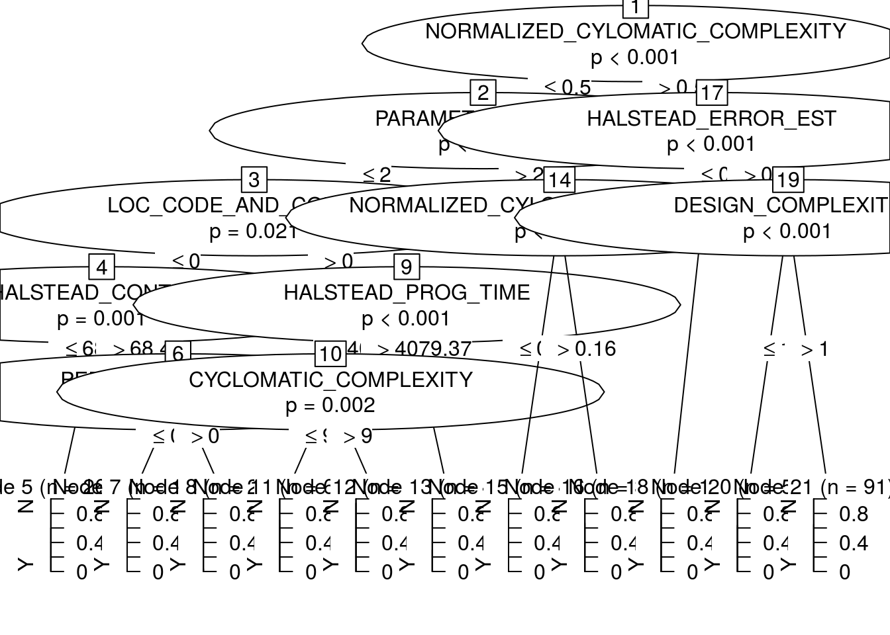
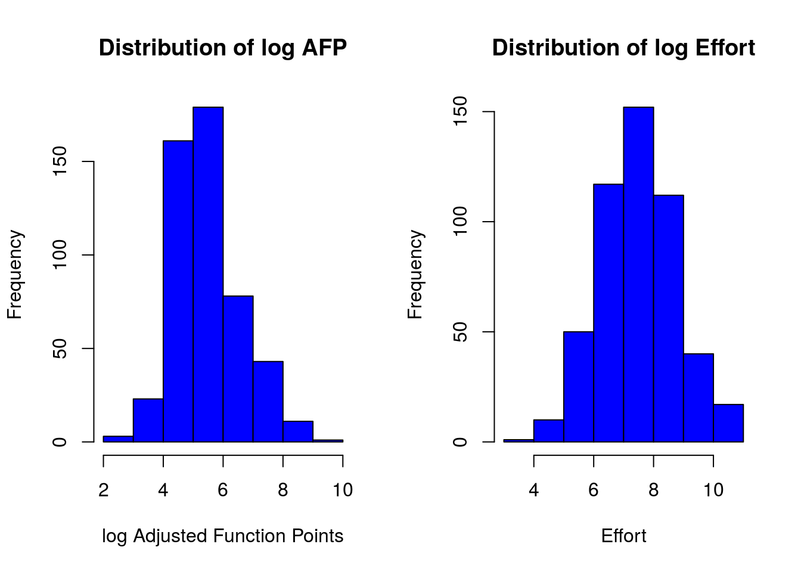

Chapter 6 Exploratory Data Analysis
6.1 Descriptive statistics
The first task with any dataset is to characterise it in terms of summary statistics and graphics.
Displaying information graphically will help us to identify the main characteristics of the data. To describe a distribution we often want to know where it is centered and and what the spread is (mean, median, quantiles)
6.2 Basic Plots
Histogram defines a sequence of breaks and then counts the number of observations in the bins formed by the breaks.
Boxplot used to summarize data succinctly, quickly displaying if the data is symmetric or has suspected outliers.

Boxplot description
Q-Q plot is used to determine if the data is close to being normally distributed. The quantiles of the standard normal distribution is represented by a straight line. The normality of the data can be evaluated by observing the extent in which the points appear on the line. When the data is normally distributed around the mean, then the mean and the median should be equal.
Scatterplot provides a graphical view of the relationship between two sets of numbers: one numerical variable against another.
Kernel Density plot visualizes the underlying distribution of a variable. Kernel density estimatiion is a non-parametric method of estimating the probability density function of continuous random variable. It helps to identify the distribution of the variable.
Violin plot is a combination of a boxplot and a kernel density plot.
6.3 Normality
- A normal distribution is an arrangement of a data set in which most values cluster in the middle of the range
- A graphical representation of a normal distribution is sometimes called a bell curve because of its shape.
- Many procedures in statistics are based on this property. Parametric procedures require the normality property.
- In a normal distribution about 95% of the probability lies within 2 Standard Deviations of the mean.
- Two examples: one population with mean 60 and the standard deviation of 1, and the other with mean 60 and \(sd=4\) (means shifted to 0)
# Area within 2SD of the mean
par(mfrow = c(1, 2))
plot(function(x) dnorm(x, mean = 0, sd = 1), xlim = c(-3, 3), main = "SD 1",
xlab = "x", ylab = "", cex = 2)
segments(-2, 0, -2, 0.4)
segments(2, 0, 2, 0.4)
# Area within 4SD of the mean
plot(function(x) dnorm(x, mean = 0, sd = 4), xlim = c(-12, 12), main = "SD 4",
xlab = "x", ylab = "", cex = 2)
segments(-8, 0, -8, 0.1)
segments(8, 0, 8, 0.1)
Figure 6.1: Plot exaple of the area within 2 and 4SD of the mean respectively
- if we sample from this population we get “another population”:
sample.means <- rep(NA, 1000)
for (i in 1:1000) {
sample.40 <- rnorm(40, mean = 60, sd = 4)
# rnorm generates random numbers from normal distribution
sample.means[i] <- mean(sample.40)
}
means40 <- mean(sample.means)
sd40 <- sd(sample.means)
means40## [1] 60.01617sd40## [1] 0.6243976- These sample means are another “population”. The sampling distribution of the sample mean is normally distributed meaning that the “mean of a representative sample provides an estimate of the unknown population mean”. This is shown in Figure 6.2
hist(sample.means)Figure 6.2: Sample means histogram
6.4 Using a running Example to visualise the different plots
As a running exmple we do next:
Set the path to to the file
Read the Telecom1 dataset and print out the summary statistics with the command
summary
options(digits = 3)
telecom1 <- read.table("./datasets/effortEstimation/Telecom1.csv", sep = ",",
header = TRUE, stringsAsFactors = FALSE, dec = ".") #read data
summary(telecom1)## size effort EstTotal
## Min. : 3.0 Min. : 24 Min. : 30
## 1st Qu.: 37.2 1st Qu.: 119 1st Qu.:142
## Median : 68.5 Median : 222 Median :289
## Mean :100.3 Mean : 284 Mean :320
## 3rd Qu.:164.0 3rd Qu.: 352 3rd Qu.:472
## Max. :284.0 Max. :1116 Max. :777- We see that this dataset has three variables (or parameters) and few data points (18)
- size: the independent variable
- effort: the dependent variable
- EstTotal: the estimates coming from an estimation method
- Basic Plots
par(mfrow = c(1, 2)) #n figures per row
size_telecom1 <- telecom1$size
effort_telecom1 <- telecom1$effort
hist(size_telecom1, col = "blue", xlab = "size", ylab = "Probability", main = "Histogram of project Size")
lines(density(size_telecom1, na.rm = T, from = 0, to = max(size_telecom1)))
plot(density(size_telecom1))
hist(effort_telecom1, col = "blue")
plot(density(effort_telecom1))
boxplot(size_telecom1)
boxplot(effort_telecom1)
# violin plots for those two variables
library(vioplot)
vioplot(size_telecom1, names = "")
title("Violin Plot of Project Size")
vioplot(effort_telecom1, names = "")
title("Violin Plot of Project Effort")
par(mfrow = c(1, 1))
qqnorm(size_telecom1, main = "Q-Q Plot of 'size'")
qqline(size_telecom1, col = 2, lwd = 2, lty = 2) #draws a line through the first and third quartiles
qqnorm(effort_telecom1, main = "Q-Q Plot of 'effort'")
qqline(effort_telecom1)
We can observe the non-normality of the data.
We may look the posible relationship between size and effort with a scatterplot
plot(size_telecom1, effort_telecom1)
Figure 6.3: Scatterplot. Relationship between size and effort
6.4.1 Example with the China dataset (from the tera-Promise Repository)
library(foreign)
china <- read.arff("./datasets/effortEstimation/china.arff")
china_size <- china$AFP
summary(china_size)## Min. 1st Qu. Median Mean 3rd Qu. Max.
## 9 100 215 487 438 17518china_effort <- china$Effort
summary(china_effort)## Min. 1st Qu. Median Mean 3rd Qu. Max.
## 26 704 1829 3921 3826 54620par(mfrow=c(1,2))
hist(china_size, col="blue", xlab="Adjusted Function Points", main="Distribution of AFP")
hist(china_effort, col="blue",xlab="Effort", main="Distribution of Effort")
boxplot(china_size)
boxplot(china_effort)
qqnorm(china_size)
qqline(china_size)
qqnorm(china_effort)
qqline(china_effort) * We observe the non-normality of the data.
* We observe the non-normality of the data.
6.4.1.1 Normality. Galton data
It is the data based on the famous 1885 Francis Galton’s study about the relationship between the heights of adult children and the heights of their parents.

6.4.1.2 Normalization
Take \(log\)s in both independent variables. For example, with the China dataset.

- If the \(log\) transformation is used, then the estimation equation is: \[y= e^{b_0 + b_1 log(x)} \]
6.5 Correlation
Correlation is a statistical relationship between two sets of data. With the whole dataset we may check for the linear Correlation of the variables we are interested in.
As an example with the China dataset
par(mfrow=c(1,1))
plot(china_size,china_effort)
cor(china_size,china_effort)## [1] 0.685cor.test(china_size,china_effort)##
## Pearson's product-moment correlation
##
## data: china_size and china_effort
## t = 20, df = 500, p-value <2e-16
## alternative hypothesis: true correlation is not equal to 0
## 95 percent confidence interval:
## 0.635 0.729
## sample estimates:
## cor
## 0.685cor(china_size,china_effort, method="spearman")## [1] 0.649cor(china_size,china_effort, method="kendall")## [1] 0.4686.6 Confidence Intervals. Bootstrap
- Until now we have generated point estimates
- A confidence interval (CI) is an interval estimate of a population parameter. The parameter can be the mean, the median or other. The frequentist CI is an observed interval that is different from sample to sample. It frequently includes the value of the unobservable parameter of interes if the experiment is repeated. The confidence level is the value that measures the frequency that the constructed intervals contain the true value of the parameter.
- The construction of a confidence interval with an exact value of confidence level for a distribution requires some statistical properties. Usually, normality is one of the properties required for computing confidence intervals.
- Not all confidence intervals contain the true value of the parameter.
- Simulation of confidence intervals
An example from Ugarte et al. (Ugarte, Militino, and Arnholt 2015)
set.seed(10)
norsim(sims = 100, n = 36, mu = 100, sigma = 18, conf.level = 0.95)
- The range defined by the confidence interval will vary with each sample, because the sample size will vary each time and the standard deviation will vary too.
- 95% confidence interval: it is the probability that the hypothetical confidence intervals (that would be computed from the hypothetical repeated samples) will contain the population mean.
- the particular interval that we compute on one sample does not mean that the population mean lies within that interval with a probability of 95%.
- Recommended reading: (Hoekstra et al. 2014) Robust misinterpretation of confidence intervals
6.7 Nonparametric Bootstrap
- For computing CIs the important thing is to know the assumptions that are made to “know” the distribution of the statistic.
- There is a way to compute confidence intervals without meeting the requirements of parametric methods.
- Resampling or bootstraping is a method to calculate estimates of a parameter taking samples from the original data and using those resamples to calculate statistics. Using the resamples usually gives more accurate results than using the original single sample to calculate an estimate of a parameter.
 - An example of bootstrap CI can be found in Chapter 13, “Evaluation in Software Engineering”
- An example of bootstrap CI can be found in Chapter 13, “Evaluation in Software Engineering”
References
Ugarte, M.D., A.F. Militino, and A.T. Arnholt. 2015. Probability and Statistics with R, Second Edition. Taylor & Francis. https://books.google.es/books?id=4aB0pwAACAAJ.
Hoekstra, Rink, Richard D. Morey, Jeffrey N. Rouder, and Eric-Jan Wagenmakers. 2014. “Robust Misinterpretation of Confidence Intervals.” Psychonomic Bulletin & Review 21 (5): 1157–64. https://doi.org/10.3758/s13423-013-0572-3.